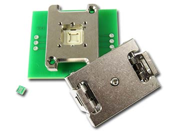

3D lithography distortion control
Advances in test and burn-in
Achieving a 75GHz test socket
Ablative DPSS UV laser process
Optimizing TSV processes and integration
Reducing the cost of probe card test and repair
Versatile stacking process for monolithic integration
International Directory of Test & Burn-in Socket Suppliers
Current Issue

January • February 2015; Volume 19, Number 1
In this IssueWe open our first issue of 2015 with greetings from Grenoble. Located in southeastern France at the foot of the French Alps, Grenoble was once again chosen for SEMI’s third rendition of the European 3D TSV Summit (Jan. 19-21). Staff from Chip Scale Review attended the Summit as publication/media sponsor. The themes of “smarter integration” and “enabling smarter systems” played out through the entire event. For more on the conference, visit the “Industry News” section inside this issue.
A portion of this issue is to the test and burn-in socket side of the industry. The upcoming Burn-in & Test Strategies (BiTS) Workshop is gearing up for its annual event dedicated to this technology sector. To coincide with this, Chip Scale Review annually updates and publishes the international directory of socket suppliers. Buyers and specifiers worldwide reference this guide and will specify and buy directly from suppliers on this list.
Debuting with this first issue of 2015 is a new editorial section consisting of Tech Briefs – short articles written by Senior Technical Editor, Debra Vogler. The new section will feature select quotes, commentary, and data based on questions posed to industry technologists. If your company has significant technical news to announce and you’re invited to participate in these interviews, be prepared to discuss the science behind your latest breakthrough, the R&D challenges that have to be solved along the way, and the industry challenges driving the need for the technology. Send your technology news releases to editor@chipscalereview.com
Cover PhotoAfter removal from the FOUP, a 300mm
wafer undergoes alignment prior to loading
into the Ultratech Superfast 4G Inspection
system’s coherent gradient sensing (CGS)
interferometry module that will perform
full-wafer topology measurement for
3D lithography distortion control. The
systematic in-line inspections of the latest
technologies, such as second-generation
VNAND, 25nm DRAM, and 14nm FinFET,
have benefited significantly.
Photo courtesy of Ultratech, Inc.

Tech Briefs
Submit Technology Newsby Debra Vogler, Senior Technical Editor

Indium Corporation tech expert to present at IMAPS France workshop
Indium Corporation’s Graham Wilson, an Applications Engineer, is scheduled to present his paper entitled “Sn+ Heat-Spring® Solder TIMs for Superior Thermal Management,” at the IMAPS France Workshop on Thermal Management (La Rochelle, France, 2/5/15) at the time of this writing. The paper explores how Heat-Spring thermal interface materials (TIMs) perform against phase change materials and thermal greases under a variety of conditions. Comparative results as they relate to power cycling and bake testing will be presented and the advantages of using the technology will also be discussed. ...>>
Everett Charles Technologies introduces rugged high-current probe
Everett Charles Technologies (ECT) recently introduced the latest addition to its family of high-current probes—the HC375. Rated at 100A DC, the probe is designed for a broad range of challenging industrial test applications including transportation, automotive, power grid, military, and PCB test. The family of high-current probes offers tip styles that have been developed to reduce arcing, and body geometries and materials that minimize resistance. ...>>

Fluxes and head-in-pillow defects tech sessions to be featured at IPC APEX EXPO
Jason Fullerton, Customer Technical Support Engineer, Alpha, an Alent plc Company Industry experts will tackle the topics of fluxes and ball grid array (BGA) head-in-pillow defects during technical sessions at IPC APEX EXPO 2015 (2/22-2/26/15; San Diego, CA). Alpha’s Jason Fullerton, Customer Technical Support Engineer for the Americas Region, will moderate two of these sessions. The “Fluxes I” session focuses on the makeup and performance of the flux component of solder paste. The BGA “Head in Pillow” session discusses the defects of the same name on BGA packages. Fullerton told Chip Scale Review that in the sessions he is moderating there will be multiple examples of new research that will be presented including: ...>>
Industry Spotlight
Submit Industry SpotlightNANIUM turned 5
Vila do Conde, February 10, 2015 - NANIUM S. A., an outsourced semiconductor assembly and test provider acknowledged for its leadership in advanced packaging, celebrates today its 5th anniversary as an independent company. Though apparently young, the company has close to twenty years of expertise in the semiconductor industry since its inception in 1996 as Siemens Semiconductors. ...>>Kulicke & Soffa Acquires Assembléon in Accretive Transaction; Expands Presence in Advanced Packaging, Automotive and Industrial Segments
Singapore - January 12, 2015 - Kulicke and Soffa Industries, Inc. (NASDAQ: KLIC) ("Kulicke & Soffa", "K&S" or the "Company") today announced it has finalized the transaction to acquire a 100% equity stake of privately held Assembléon B.V. (Assembléon). The all-cash transaction, valued at approximately $98 million, closed on January 9, 2015 ...>> Clamshell Spring Pin QFN Socket for Microchip's 10TDFN
Eagan, MN - February, 2015 - Ironwood Electronics recently introduced a new QFN socket addressing high performance requirements for testing QFN devices - CBT-QFN-7039. The contactor is a stamped spring pin with 17 gram actuation force per ball and cycle life of 50,000 insertions. The self inductance of the contactor is 0.75 nH, insertion loss < 1 dB at 31.7 GHz. ...>> Ad by Ironwood Electronics
Industry Events

SEMI European 3D TSV Summit 2015
In January 2015, Grenoble hosted its third edition of the European 3D TSV Summit— SEMI Europe’s flagship event focused on 2.5 and 3D integration. Attracting 250 executives and experts from 22 countries to discuss the latest updates in the realm of TSV, the event was a veritable success with more than 9 out of 10 participants rating the event as “good” or “very good.” ...>>Fountain Hills, AZ - The 11th Annual Device Packaging Conference (DPC) is an international event organized by the International Microelectronics Assembly and Packaging Society (IMAPS). IMAPS International Device Packaging Conference is one of the premier conferences held each year where the latest in packaging technology and trends is unveiled. imaps.org/devicepackaging
Abstract deadline is April 17th, 2015. IWLPC 2015
San Diego, CA - Register Today for the 65th ECTC! The ECTC will offer 16 professional development courses, over 360 papers in 41 technical sessions, 6 Invited Session and over 100 vendors. Authors from nearly 20 countries will cover a wide spectrum of topics, including 3D/TSV, interposers, assembly, materials, modeling, interconnections, reliability, wafer level packaging, wire bonding, MEMS and optoelectronic technologies. Technical Program is now available. ectc.net